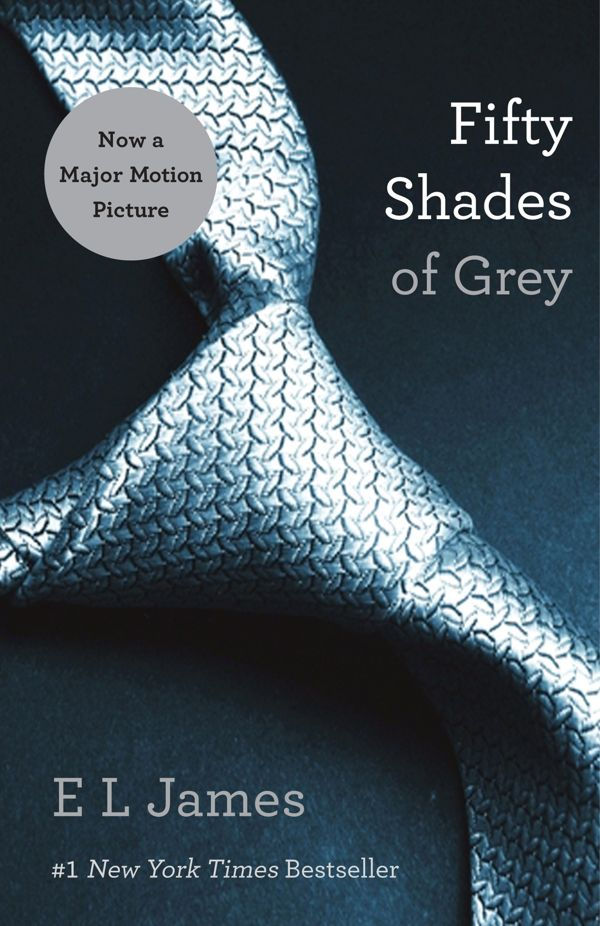

Fifty Shades of Grey
by E. L. James, 2011
- Part of
- Fifty Shades (#1)
- Description
- "And in this quiet moment as I close my eyes, spent and sated, I think I'm in the eye of the storm. And in spite of all he's said, and what he hasn't said, I don't think I have ever been so happy."
When literature student Anastasia Steele goes to interview young entrepreneur Christian Grey, she encounters a man who is beautiful, brilliant, and intimidating. The unworldly, innocent Ana is startled to realize she wants this man and, despite his enigmatic reserve, finds she is desperate to get close to him. Unable to resist Ana's quiet beauty, wit, and independent spirit, Grey admits he wants her, too—but on his own terms.
Shocked yet thrilled by Grey's singular erotic tastes, Ana hesitates. For all the trappings of success—his multinational businesses, his vast wealth, his loving family—Grey is a man tormented by demons and consumed by the need to control. When the couple embarks on a daring, passionately physical affair, Ana discovers Christian Grey's secrets and explores her own dark desires.
• An Instant #1 New York Times Bestseller
• More than 165 Million Copies Sold Worldwide
• One of 100 Great Reads in the Great American Read
• 133 Weeks on the New York Times Bestseller List
This book is intended for mature audiences. - Publication
- The Writer's Coffee Shop
- Publication date
- June 20, 2011
- ISBN
- 9781612130286, 1612130283
- Call number
- 823.92